class: center, middle # Neural networks Pierre Ablin .credits[Adapted from O. Grisel and C. Ollion [deep learning course](https://github.com/m2dsupsdlclass/lectures-labs)] --- # Neural networks --- # Neural networks Neural networks are a powerful way to go beyond linear models. -- - Sequence of layers - One layer maps $p$ inputs to $q$ outputs -- Input $x_1, \cdots, x_p$ Output $z_1, \cdots, z_q$ -- **Parameters** - Weights of $p$ coefficients $w^i$, $i=1\dots q$ - Biases $b^i$ - Non linearity $\sigma$ (e.g. $\sigma = ReLU, \sigma = \tanh$, ...) -- $$z_i = \sigma(w^i_1\times x_1 + \dots + w^i_p \times x_p + b^i)$$ --- # Neural networks Neural networks are a powerful way to go beyond linear models. - Sequence of layers - One layer maps $p$ inputs to $q$ outputs Input $x_1, \cdots, x_p$ Output $z_1, \cdots, z_q$ **Parameters** - Weights of $p$ coefficients $w^i$, $i=1\dots q$ - Biases $b^i$ - Non linearity $\sigma$ (e.g. $\sigma = ReLU, \sigma = \tanh$, ...) In vector form: $z = \sigma(Wx + b)$ --- # Non-linearity - Scalar function $\mathbb{R} \to \mathbb{R}$ - Non linear Example: Rectified Linear Unit (ReLU) $\sigma(x) = \max(x, 0)$ .center[ 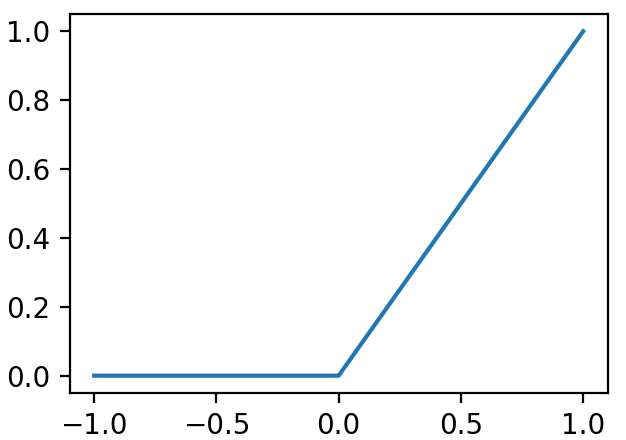 <br/> ] --- # Non-linearity - Scalar function $\mathbb{R} \to \mathbb{R}$ - Non linear Example: Tanh $\sigma(x) = \tanh(x)$ .center[ 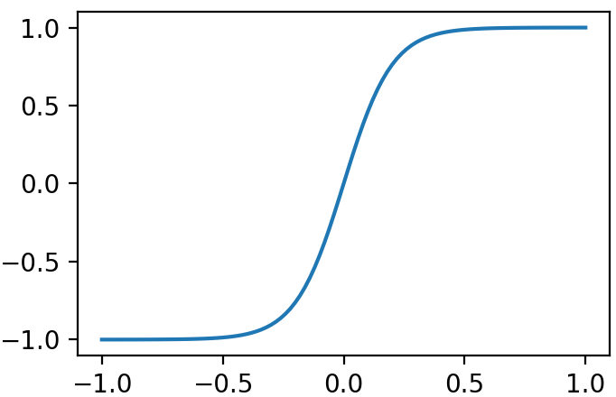 <br/> ] --- # Neural networks $z_i = \sigma(w^i_1\times x_1 + \dots + w^i_p \times x_p + b^i)$ -- Layers are stacked: .center[ <img src="images/Colored_neural_network.svg" style="width: 350px;" /> <br/> ] --- # Neural networks $z_i = \sigma(w^i_1\times x_1 + \dots + w^i_p \times x_p + b^i)$ Layers are stacked: .center[ <img src="images/Colored_neural_network.svg" style="width: 270px;" /> <br/> ] Here, 2 layers: depth=2 --- # Universal approximators **Theorem:** a neural network with one hidden layer is a universal approximator. With enough hidden units, it can approximate any transform. -- **Striking** difference with linear model .center[ 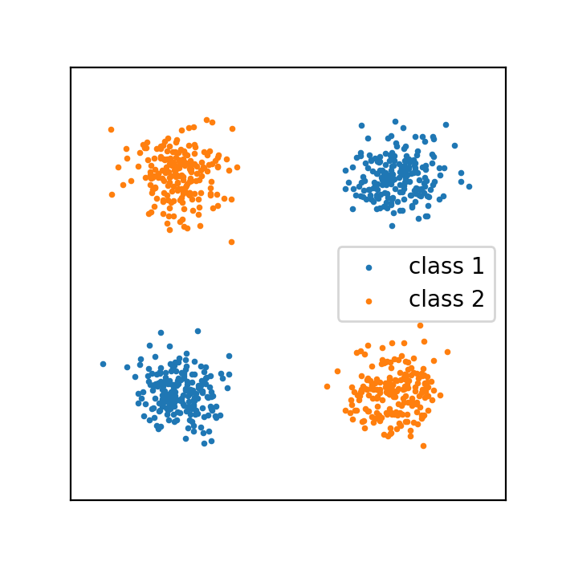 <br/> ] --- # Role of depth If 1-layers Neural networks can learn any function, why do you need more layers? -- - Can learn more complicated functions with fewer hidden units -- .center[ 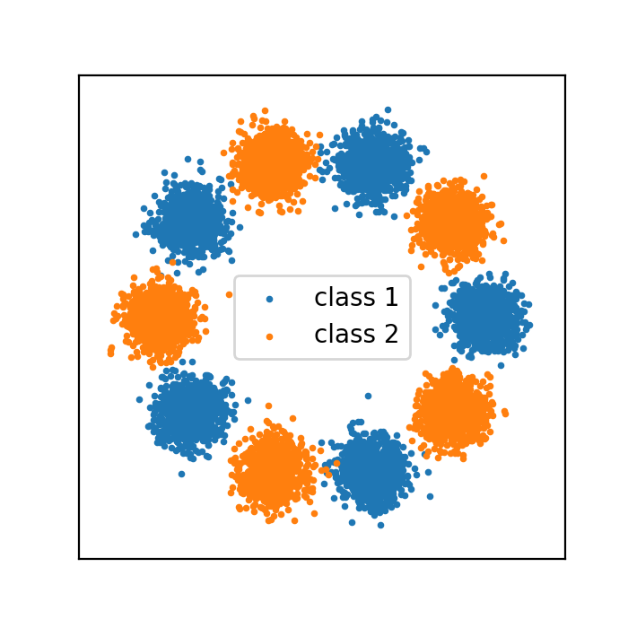 <br/> ] --- # Role of depth If 1-layers Neural networks can learn any function, why do you need more layers? 1 layer 2 hidden units .center[ 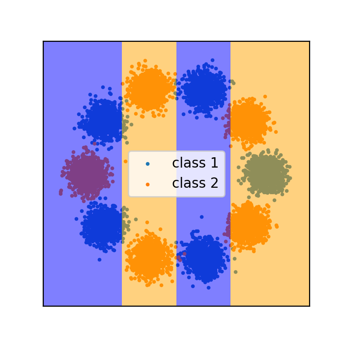 <br/> ] --- # Role of depth If 1-layers Neural networks can learn any function, why do you need more layers? 1 layer 3 hidden units .center[ 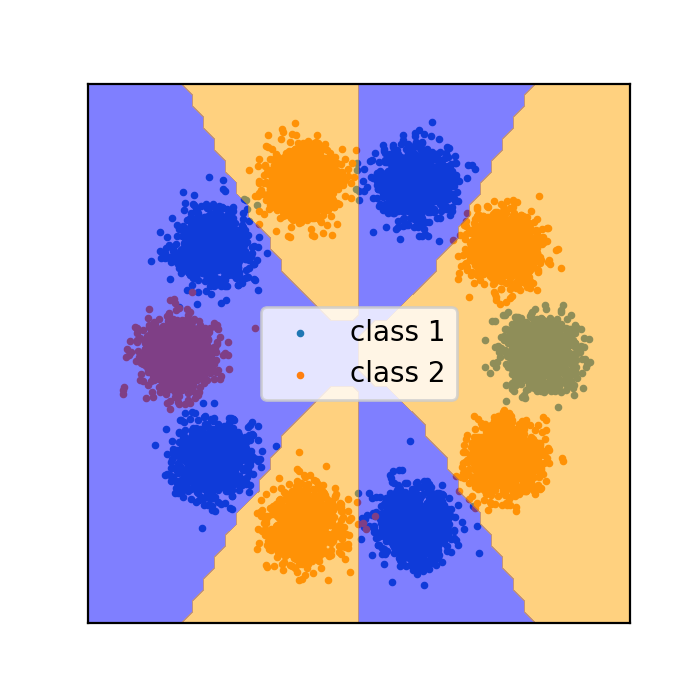 <br/> ] --- # Role of depth If 1-layers Neural networks can learn any function, why do you need more layers? 1 layer 4 hidden units .center[ 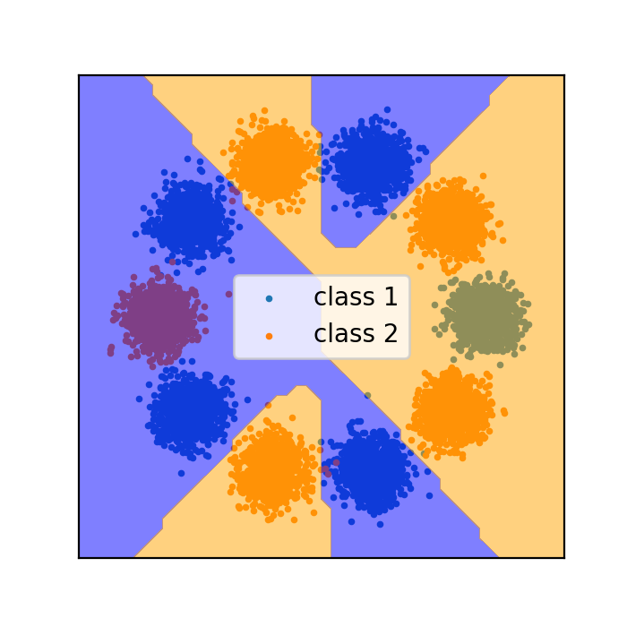 <br/> ] --- # Role of depth If 1-layers Neural networks can learn any function, why do you need more layers? 1 layer 5 hidden units .center[ <br/> ] --- # Role of depth If 1-layers Neural networks can learn any function, why do you need more layers? 1 layer 6 hidden units .center[ 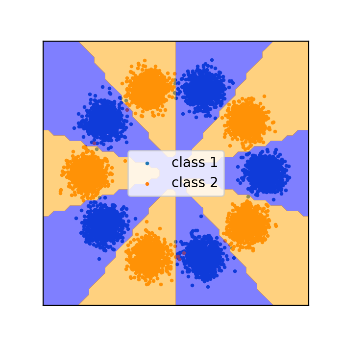 <br/> ] --- # Role of depth If 1-layers Neural networks can learn any function, why do you need more layers? 2 layers 2 hidden units .center[ 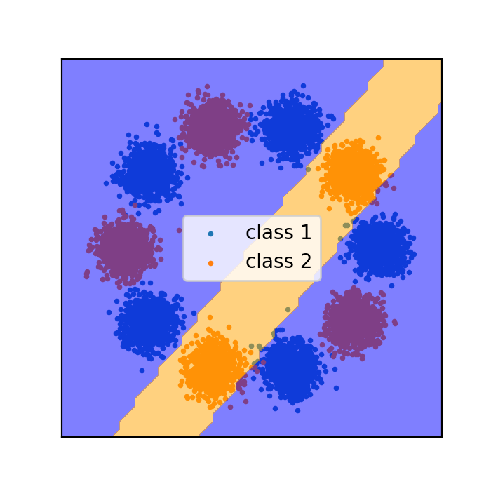 <br/> ] --- # Role of depth If 1-layers Neural networks can learn any function, why do you need more layers? 2 layers 3 hidden units .center[ 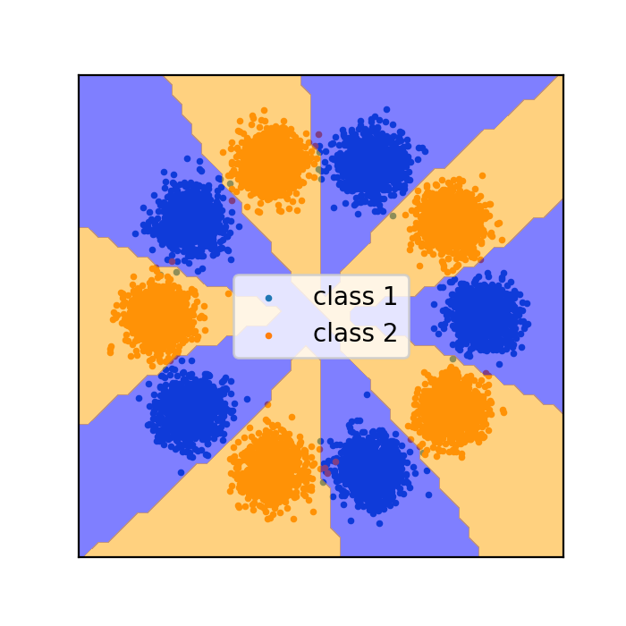 <br/> ] --- # Role of depth If 1-layers Neural networks can learn any function, why do you need more layers? 2 layers 4 hidden units .center[ 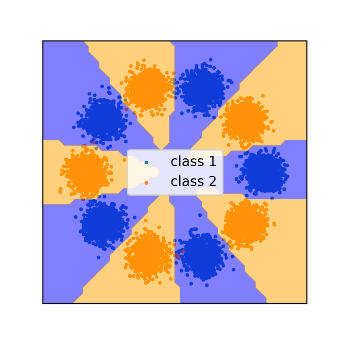 <br/> ] --- # Neural nets and overfit - Neural nets have lots of parameters, so you need many samples to train them, otherwise they overfit - Mystery : some very big neural networks (i.e. for image recognition) have many more parameters than training samples, yet they do not overfit --- # Prediction with a neural network A neural network defines a series of transformations $$ x_{n+1} = \sigma(W_nx_n + b_n), \enspace n=0\dots L-1 $$ ### Classification $K$ classes: Impose that the output has $K$ dimensions $$x_L \in \mathbb{R}^K$$ And predict class as the max of $x_L$: $$ y_{pred} = \arg\max x_L $$ --- # Prediction with a neural network A neural network defines a series of transformations $$ x_{n+1} = \sigma(W_nx_n + b_n), \enspace n=0\dots L-1 $$ ### Regression Simply have the output in $1$ dimension --- # Training a neural network Need to define a cost function. Samples $x^1, \dots, x^N$ with labels $y^1, \dots, y^N$. Define $x_L^i$ the output of the network with input $x^i$. ### Regression Simply use mean square-error? $$ \mathcal{L} = \sum_{i=1}^N(x^i_L - y^i)^2 $$ --- # Training a neural network Need to define a cost function. Samples $x^1, \dots, x^N$ with labels $y^1, \dots, y^N$. Define $x_L^i$ the output of the network with input $x^i$. ### Classification Need to quantify how close the arg-maximum of $x_L^i$ is to $y^i$. $$ \mathcal{L} = \sum_{i=1}^N\ell(x_L^i, y^i) $$ Cross-entropy: $$ \ell(x, y) = -x_y + \log( \sum \exp(x_j)) $$ --- # What is the gradient? Now, we have a cost function that takes as input parameters of the network and outputs a scalar. How do we compute the gradient of this function? ## Automatic differentiation !